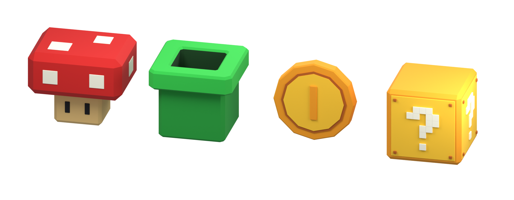

Cogumelo


Modelo aprovado · 484 triângulos
Volumes simples, detalhes geométricos, quinas chanfradas e materiais foscos. Todos os previews são renderizados dos próprios modelos no Blender, com a mesma câmera e iluminação.
Carregando o preview 3D…
Arraste para girar. Use a roda do mouse ou o gesto de pinça para aproximar. Com o modelo em foco, use as setas, + e −. Funciona offline.
Para criar um asset 2D, escolha o ângulo e clique em Baixar SVG. O arquivo é vetorial, com fundo transparente e recorte automático ao redor do objeto. Se “Ver malha” estiver ativo, a exportação será em linhas. O SVG mantém uma vista fixa; para outro ângulo, gire o modelo e exporte novamente.

Modelo aprovado · 484 triângulos


Abertura modelada e borda espessa · 156 triângulos


Contorno de 12 lados e relevo nas duas faces · 356 triângulos


Interrogações em relevo, painéis e rebites quadrados
Paleta do cano, moeda e bloco · Paleta do cogumelo · Validação dos novos modelos · Metadados
Os arquivos GLB e FBX têm textura embutida. Para OBJ, mantenha o MTL e a pasta Models/Textures/ nos caminhos originais. Os arquivos Blender incluem o modelo e o estúdio de renderização. Todos os modelos têm uma malha, um material e origem na base.
Estudo de fan art. Os jogos não foram alterados. Teste original do cogumelo · Primeiras imagens geradas